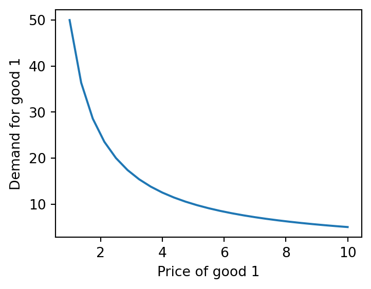
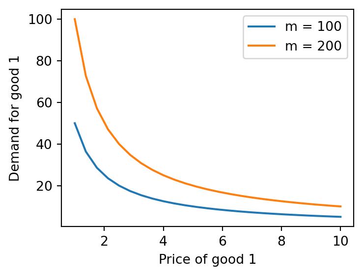
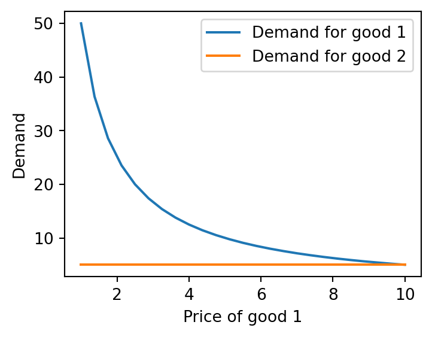

def solve_by_hand(alpha, m, p1, p2):
x1 = alpha * m / p1
x2 = (1 - alpha) * m / p2
return x1, x2Tutorial 2: Optimization in Python
In this tutorial, we’ll work through example 1 from the constrained optimization problems provided here. In particular, our optimization problem is as follows:
\[ \max_{x_1, x_2} \quad x_1^{\alpha} x_2^{\beta} \quad \text{s.t.} \quad p_1 x_1 + p_2 x_2 = m \]
As illustrated in the notes, we can solve this problem by formulating the Lagrangian and solving the first-order conditions, leading to the following optimal values for \(x_1\) and \(x_2\):
\[ x_1^* = \frac{\alpha}{\alpha + \beta} \frac{m}{p_1}, \quad x_2^* = \frac{\beta}{\alpha + \beta} \frac{m}{p_2} \]
We will make a simplification and assume \(\beta = 1 - \alpha\), so we have:
\[ x_1^* = \frac{\alpha m}{p_1}, \quad x_2^* = \frac{(1-\alpha) m}{p_2} \]
Thus, the utility-maximizing values of \(x_1\) and \(x_2\) allocate an \(\alpha\) fraction of income to good 1 and a \((1-\alpha)\) fraction to good 2.
Note: You should copy-paste the code snippets below into a Google Colab notebook and run them to see the output while you read through the tutorial.
Optimization by Hand
To begin, we’ll code the expressions we solved manually above to perform some comparative statics. Let’s write a Python function, solve_by_hand, that outputs the values of \(x_1\) and \(x_2\) as a function of the parameters \(\alpha\), \(m\), \(p_1\), and \(p_2\) based on the above expressions.
Let’s test this function at the following parameter values: \[\alpha = 0.5, \ m = 100, \ p_1 = 5, \ p_2 = 10\] We should get \(x_1^* = 0.5 \times 100/5 = 10\) and \(x_2^* = 0.5 \times 100/10 = 5\).
# Parameters
alpha = 0.5
m = 100
p1 = 5
p2 = 10
# Solve for the optimal values of x1 and x2
x1, x2 = solve_by_hand(alpha, m, p1, p2)
# Print the results (round to 2 decimal places)
print(f"Demand for good 1: {round(x1, 2)}")
print(f"Demand for good 2: {round(x2, 2)}")Demand for good 1: 10.0
Demand for good 2: 5.0Next, we’ll perform some comparative statics:
- We’ll plot the demand for good 1 as a function of its price, keeping the other parameters fixed at the values specified above.
- Then, we’ll add another curve to the same plot, this time with \(m = 200\).
# Import necessary libraries
import numpy as np
import matplotlib.pyplot as plt
# Create a vector of 25 prices for good 1 between 1 and 10
p1_vals = np.linspace(1, 10, 25)
# Solve for demand at each price value
x1_vals, x2_vals = solve_by_hand(alpha, m, p1_vals, p2)
# Plot demand for good 1 as a function of price of good 1
plt.plot(p1_vals, x1_vals)
plt.xlabel('Price of good 1')
plt.ylabel('Demand for good 1')
plt.show()
This gives us the standard downward-sloping demand curve. Now, let’s overlay a second demand curve for the case when income is \(m = 200\).
# Calculate demand when m = 200
x1_vals2, x2_vals2 = solve_by_hand(alpha, 200, p1_vals, p2)
# Create a new plot with the second curve
plt.plot(p1_vals, x1_vals, label='m = 100')
plt.plot(p1_vals, x1_vals2, label='m = 200')
plt.xlabel('Price of good 1')
plt.ylabel('Demand for good 1')
plt.legend()
plt.show()
Note that, since the demand for good 2 is independent of the price of good 1, both the vectors x2_vals and x2_vals2 will remain constant.
Optimization using Python
So far, we’ve seen how programming allows us to express quantities from our model and perform comparative statics to understand how they respond to changes in parameters. For instance, by plotting the demand curve above, we can quickly observe that the demand for good 1 decreases with price at a diminishing rate.
Up to this point, we solved the expressions manually and then implemented them in Python. However, in many economic models, the expressions can become too complex to solve analytically, making it more practical to code the models directly to gain insights without explicitly solving them. While our problem can be solved analytically, we’ll still learn how to use Python to solve it without relying on analytical expressions for \(x_1\) and \(x_2\), to get a sense of how to approach more complex models.
We will first fix the parameters at following values: \[\alpha = 0.5, \ m = 100, \ p_1 = 5, \ p_2 = 10\]
and write the code to solve for the optimal values of \(x_1\) and \(x_2\) using the minimize function from the scipy.optimize library. We will then embed this code in a function called solve_demand that takes the parameters as inputs and returns the optimal values of \(x_1\) and \(x_2\).
import numpy as np
from scipy.optimize import minimize
# Parameters
alpha = 0.5
m = 100
p1 = 5
p2 = 10
# Utility function
def utility(x):
x1, x2 = x
if x1 < 0 or x2 < 0:
return np.inf
else:
return -x1 ** alpha * x2 ** (1 - alpha)
# Budget constraint
def budget_constraint(x):
x1, x2 = x
return m - p1 * x1 - p2 * x2
# Specify the constraints and initial guess
constraints = ({"type": "eq", "fun": budget_constraint})
initial_guess = [1, 2]
# Use minimize from scipy to solve for the optimal values of x1 and x2
result = minimize(utility, initial_guess, constraints=constraints)
x1, x2 = result.x
# Print the results (round to 2 decimal places)
print(f"Demand for good 1: {round(x1, 2)}")
print(f"Demand for good 2: {round(x2, 2)}")Demand for good 1: 10.0
Demand for good 2: 5.0Note: The utility function is defined as negative because we are maximizing utility, so we are effectively minimizing the negative of the utility function.
If we also wanted to bake in the constraint that \(x_1\) and \(x_2\) must be non-negative, we can modify the utility function to return a really large value if \(x_1\) or \(x_2\) is negative. This way, the optimizer will avoid negative values for \(x_1\) and \(x_2\). The modified utility function would be defined as follows:
def utility(x):
x1, x2 = x
if x1 < 0 or x2 < 0:
return np.inf
else:
return -x1 ** alpha * x2 ** (1 - alpha)In the code above, we simply provided the computer with our objective function and constraints, and it solved for the optimal values of \(x_1\) and \(x_2\) given a set of parameters. This means we didn’t need to solve the first-order conditions by hand. Of course, we don’t get an analytical expression for how demand depends on income and prices as we did before. However, we can extend this approach by embedding the code in a function that takes the parameters as inputs and returns the optimal values. This way, we can plot the quantities for different parameter values and gain insights into how the optimal quantities depend on prices and income.
def solve_demand(alpha, m, p1, p2):
def utility(x):
x1, x2 = x
if x1 < 0 or x2 < 0:
return np.inf
else:
return -x1 ** alpha * x2 ** (1 - alpha)
def budget_constraint(x):
x1, x2 = x
return m - p1 * x1 - p2 * x2
constraints = ({"type": "eq", "fun": budget_constraint})
initial_guess = [1, 2]
result = minimize(utility, initial_guess, constraints=constraints)
x1, x2 = result.x
return round(x1, 2), round(x2, 2)Let’s test the function with the same parameters as before.
m = 100
p1 = 5
p2 = 10
alpha = 0.5
x1, x2 = solve_demand(alpha, m, p1, p2)
print(f"Demand for good 1: {x1}")
print(f"Demand for good 2: {x2}")Demand for good 1: 10.0
Demand for good 2: 5.0Now that we have the function solve_demand, we can use it to plot the demand for good 1 as a function of its price, similar to what we did earlier.
# Apply function to a range of prices for good 1
x = [solve_demand(alpha, m, p1, p2) for p1 in p1_vals]
x1_vals3, x2_vals3 = np.array(x).T
# Plot demand curves
plt.plot(p1_vals, x1_vals3, label='Demand for good 1')
plt.plot(p1_vals, x2_vals3, label='Demand for good 2')
plt.xlabel('Price of good 1')
plt.ylabel('Demand')
plt.legend()
plt.show()